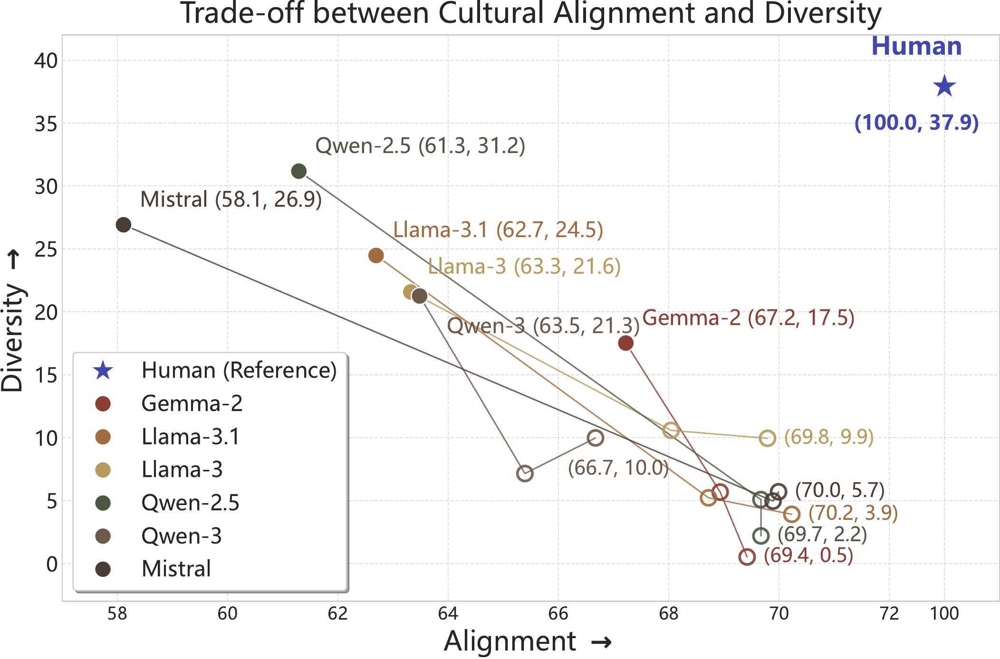
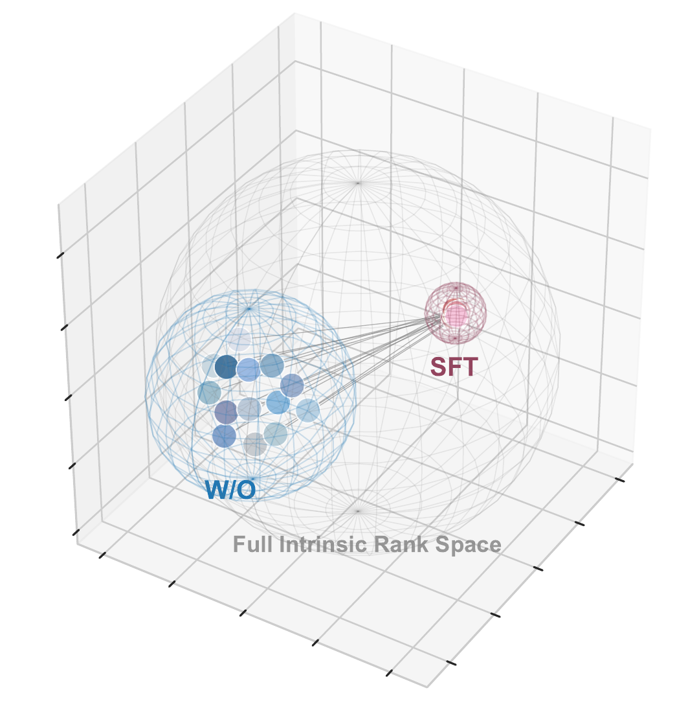
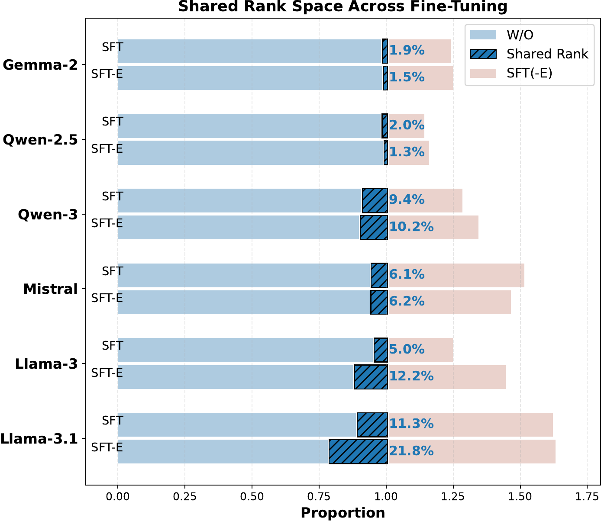

Alignment uses human responses as the reference:
\[
A(M) = \mathbb{E}_{q,c,p}\left[S\left(M(q \mid p,c), H(q \mid p,c)\right)\right]
\]
1Tianjin University 2Singapore University of Technology and Design
Accepted by EMNLP 2026 Findings
One question: Do improved alignment scores truly reflect diversity-aware models?
Our answer is: No ! We show that alignment gains consistently coincide with reduced behavioral diversity.

In short, alignment asks whether a model is faithful within each cultural subgroup, while diversity asks whether it preserves meaningful cross-cultural variation. The paper treats them as complementary axes because alignment gains can come at the cost of diversity preservation.
Diversity matters because a higher alignment score does not necessarily mean a model has learned plural human values. It may simply become better at matching the dominant preference pattern, so real cultural alignment should improve fidelity while preserving meaningful cross-cultural variation.
Section 3 shifts the reference point: alignment compares a model response with real human answers, while diversity compares the model's own responses under different cultural personas.
Alignment uses human responses as the reference:
Diversity uses model responses as the reference:
Here, \(S(\cdot,\cdot)\) measures behavioral similarity; \(M(q \mid p,c)\) denotes the model-generated response under persona \((p,c)\); \(H(q \mid p,c)\) is the corresponding human behavioral reference; and \((p_i,c_i)\) and \((p_j,c_j)\) are personas sampled from different cultural groups.


We hypothesize that this trade-off is driven by the low-rank simplicity bias↗ during neural network optimization. Because pre-training induces a shared low-rank structure that imposes a rank upper bound on representations, cultural fine-tuning is not globally flexible: it operates under a strict representational bottleneck, reallocating cultural representations into a highly compact, decoupled activation subspace. This restricted rank space limits the model's ability to preserve heterogeneous cultural profiles, so the model trades latent representational capacity for optimization efficiency and produces cultural flattening.
We introduce a unified evaluation framework that treats cultural alignment and cultural diversity as complementary axes, enabling joint measurement of whether models match human values while preserving cross-cultural variation.
Applying this framework to six LLMs, we show that alignment gains consistently coincide with reduced behavioral diversity.
We provide a mechanistic account of cultural flattening grounded in the low-rank simplicity bias, showing that fine-tuning compresses diverse cultural values into a low-rank subspace and thereby marginalizes minority cultures.
If you find our work useful or inspiring, please cite us:
@misc{zhang2026alignedflattenedanalyzingtradeoff,
title={Aligned but Flattened: Analyzing the Trade-off between Cultural Alignment and Diversity in LLMs},
author={Jingshen Zhang and Shaoyang Xu and Wenxuan Zhang},
year={2026},
eprint={2609.00565},
archivePrefix={arXiv},
primaryClass={cs.SI},
url={https://arxiv.org/abs/2609.00565},
}